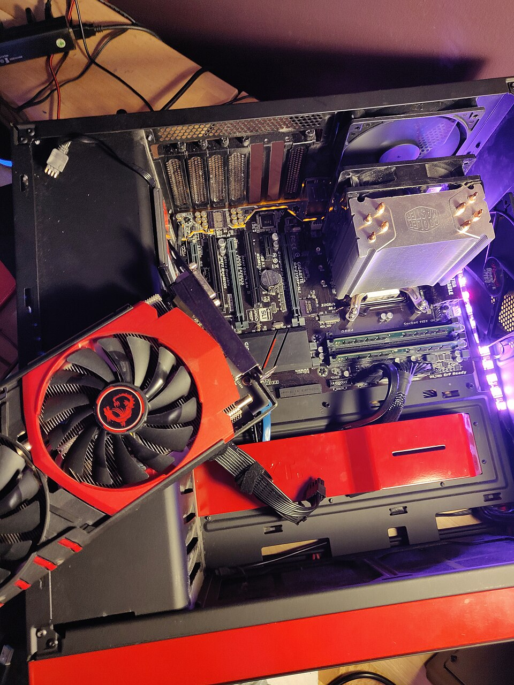
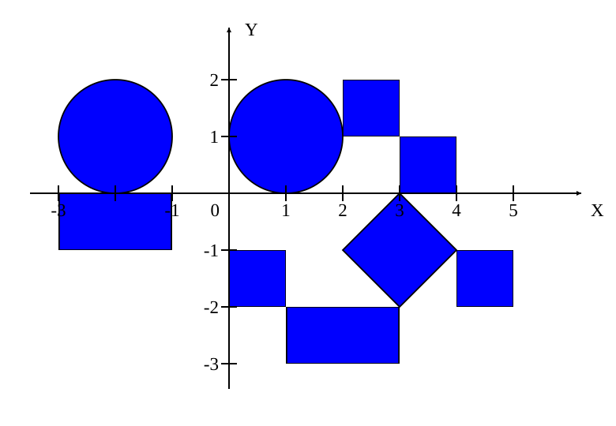

ЛАБОРАТОРНА №7 · ВАРІАНТ 5
JavaScript у дії
Дослідіть поточну сторінку, знайдіть слова у тексті та приберіть нулі з масиву.
Наведіть курсор на заголовок, жирний текст або курсив. Одне натискання змінює виділення, подвійне - колір та нахил. Клавіша Enter також перемикає виділення.
ЗАВДАННЯ 3.5 · ОБ’ЄКТ DOCUMENT
Властивості поточного документа
Кнопка Run Task виведе назви та значення доступних властивостей document, зокрема URL, title, forms, images та методи.
ЗАВДАННЯ 5.2.5 · РЕГУЛЯРНІ ВИРАЗИ
Пошук слів на «п…я»
Знайдіть слова, які починаються літерою «п» і закінчуються літерою «я». Великі й малі літери рівнозначні; апостроф і дефіс можуть бути частиною слова.
ЗАВДАННЯ 6.5 · МАСИВИ
Масив B без нульових елементів
Введіть елементи A через пробіл, кому або крапку з комою. Десятковий знак - крапка. Розмір N визначається кількістю введених чисел.
ЗАВДАННЯ 4 · ПОДІЇ МИШІ
Зображення, що реагують на дії
Наведення змінює насиченість, натискання - масштаб і рамку. Повторне натискання повертає початковий вигляд. Дії відображаються у журналі нижче.

